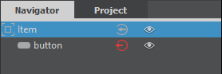

Qt Quick UI Forms
You can use Qt Creator wizards to create UI forms that have the filename extension .ui.qml. The UI forms contain a purely declarative subset of the QML language. It is recommended that you edit the forms in the Design mode. Qt Creator enforces the use of the supported QML features by displaying error messages.
The following features are not supported:
- JavaScript blocks
- Other bindings than pure expressions
- Signal handlers
- States in other items than the root item
- Root items that are not derived from QQuickItem or Item
The following types are not supported:
- Behavior
- Binding
- Canvas
- Component
- Shader Effect
- Timer
- Transform
- Transition
Supported Methods
Qt Creator supports most JavaScript functions that are supported by the QML engine, as well as a subset of Qt QML methods.
This section lists the functions that you can use in .ui.qml files.
JavaScript Functions
As a rule of thumb, pure functions are supported. They only depend on and modify states of parameters that are within their scope, and therefore always return the same results when given the same parameters. This makes it possible to convert and reformat property bindings without breaking the .ui.qml files.
The following JavaScript functions are supported:
charAt()charCodeAt()concat()endsWith()includes()indexOf()isFinite()isNaN()lastIndexOf()substring()toExponential()toFixed()toLocaleLowerCase()toLocaleStringtoLocaleUpperCase()toLowerCase()toPrecision()toString()toUpperCase()valueOf()
In addition, all functions of the Math and Date objects are supported.
For more information, see List of JavaScript Objects and Functions.
Qt QML Methods
Qt Creator supports color methods, helper methods for creating objects of specific data types, and translation methods.
The following color methods are supported:
The following helper methods are supported:
- Qt.formatDate()
- Qt.formatDateTime()
- Qt.formatTime()
- Qt.matrix4x4()
- Qt.point()
- Qt.quaternion()
- Qt.rect()
- Qt.size()
- Qt.vector2d()
- Qt.vector3d()
- Qt.vector4d()
The following translation methods are supported:
For more information about using the methods, see Qt QML Methods.
Using Qt Quick UI Forms
You can edit the forms in the Form Editor and Text Editor tabs in the Design mode. Items that are supposed to be used in QML code have to be exported as properties:
Item {
width: 640
height: 480
property alias button: button
Button {
anchors.centerIn: parent
id: button
text: qsTr("Press Me")
}
}
The property alias exports the button to the QML code that uses the form. You can use the (Export) button in the Navigator to export an item as a property:

In the QML file that uses the form, you can use the button property alias to implement signal handlers, for example. In the following code snippet, the UI form is called MainForm.ui.qml:
MainForm {
anchors.fill: parent
button.onClicked: messageDialog.show(qsTr("Button pressed"))
}
You can also assign properties or define behavior or transitions.
To move from the Design mode directly to the implementation of a type in the .qml file, right-click the type in the Navigator and select Go to Implementation in the context menu.